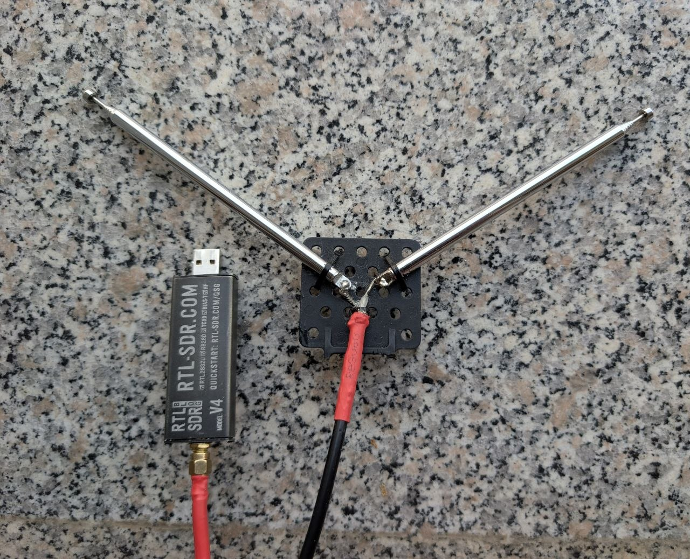

LRPT Satellite Reception

LRPT (Low Rate Picture Transmission) is the image downlink the Russian Meteor-M weather satellites broadcast around 137 MHz.
How it works
- Antenna: a hand-made V-dipole cut for the 137 MHz band, about 54 cm per side.
- SDR: an RTL-SDR records the pass.
- Decoding: the QPSK signal is demodulated and the LRPT frames are turned into the image.

I decode the captures with SatDump.